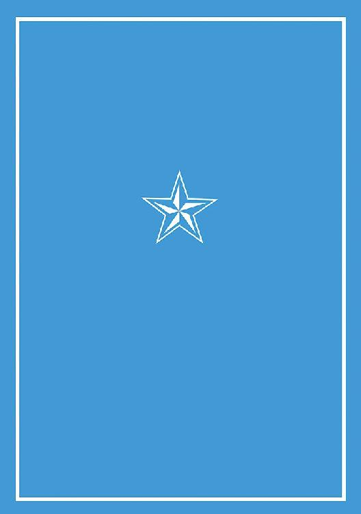

| 蛮勇は世界を巡る 犬吠埼ナイン構想 (電子書籍普及委員会) | |
| 犬吠埼一介 | |
| denshi syoseki fukyuu iinkai (2015) | |
暗い地下道のなかを、かすかな光がゆらゆらと揺れ動いていた。
人影が二人、走っている。手にランタンのような明かりを持った、小柄な男を先頭にして。水路の水しぶきを盛大に蹴散らしながら。ラフな格好だ。足取りは軽く、おおよそ人が出せるようなスピードを超えていた。そこらじゅうに転がる大小さまざまの障害物をまるで意にも介さず、素早く地を蹴る両足には、それぞれふたつのローラーが装備されている。最新型の電磁式加速シューズだ。
背後から追いすがるのは、黒に近いほど濃いグレーの戦闘服で全身を覆い尽くした、屈強な体つきの男が四人。顔面はフルフェイスのガードで覆われていて、表情などはまったくうかがえない。だが、標的を徹底的に追跡しようという強い執念が、その機敏な動作から感じられた。
追われる側の二人のうち後方の男が、手にした物体を何気なく投げ捨てるのが見えた。四人は一瞬で散開して回避行動を取る。だが、遅かった。地下道の壁面にぶつかった特殊閃光弾が炸裂し、強い光と電磁波が、追っ手たちの全身に仕込まれた精密な追跡センサー網をずたずたに焼き切る。一人がつまづいて前のめりに倒れ、もう一人が痛みをこらえるように思わず顔面を押さえながらひっくり返った。逃走者たちは、そんな彼らを尻目にさらに急加速すると、一目散にその場から遠ざかっていった。
「どうだ、撒いたか？」
身体を振って横に重心を流すような独特の動きで静止し、物陰で身をかがめると、リーは、先行して走っていた男にそう声を掛ける。さすがに息が乱れていた。中肉中背の彼に比べて、目の前の男は細身で、二人が並んで立つと、その小柄で人形のようなアンバランスな体躯がより際立つのだった。
「当然ですよ。この道でバッチリです」
そう、自慢げに返答すると、ファントムは手に持った明かりの発生源を大事そうに掲げてみせた。取っ手のついた水筒にも似た金属製の円筒形の物体が、ゆるやかに光を放ち、周囲の景色をぼんやりと浮かび上がらせている。
「ひゅーっ！ 今回はさすがにヤバイかと思ったぜ。見たか？ 奴らのあの慌てぶりをよ」
安堵の声色でそう言いながらも、リーは背後の真っ暗な空間をじっと凝視し、さらに耳まで澄ませながら、追っ手の姿と気配が完全に消えたことを念入りに確認した。ムーンテック社謹製の、最新鋭の対人閃光弾の直撃を食らわせておいたとはいえ、油断は禁物だ。何しろ今は、「絶対に失ってはならない貴重品」を運搬しているのだから。
地面に膝をついて、円筒形の物体の上部に組み込まれた、入出力端末とセットになった画面を引き起こし、流れるような指運びでキーを叩き込んでいるファントムの横から、リーも同じ画面を見る。滝のような速さで下から上に流れ飛んていく文字列を認識し、システムの無事を確認すると、ほっと息をついた。
「アジトなんてもんは、これさえありゃいくらでも建てなおせるんだよ。馬鹿が」
そう吐き捨てるようにつぶやく。ファントムが顔を上げると、にっこりと微笑んだ。
「デイドリーマーは不滅ですよね？」
「ああ。ったりめーだろ」
ちくちくとした短髪の頭に手を乗せ、髪の毛をかき回してやりながら、リーは、思う。なぜ、今になって急に、武装隊の急襲が？ 公安が持っていた探索装置の世代が、たまたまこちらの迎撃装備に劣っていたからよかったものの。それに再建が可能とはいえ、いくら何でも研究所を一から再稼働させるコストだって馬鹿にならないんだよ。これまでは、単なる、露骨な嫌がらせ程度に止まっていたのに。
だが......今はよしとしよう。リーは目を細めた。ファントムの類まれな暗視能力もあって、こうして首尾よく追っ手を撒けたのだから。彼自身が長い年月を掛けて積み上げてきた施設の心臓部も、無事に持ち出すことができた。リーは、胸中に、安堵と懐疑と苛立ちが、交互に交錯しては消え、また浮かぶのに任せていた。頭上の、真夜中の街から染みこんできた雨水のなれの果てが、ぽたぽたと水路に落ちていった。
セントラルシティの、都会的で洗練された街並みのなかを、リーは背中を丸めながら足早に歩いていた。道がひどく混雑している。名にしおう「カグヤプロジェクト」の定例総会が開催されるとあって、関係者を始め、見物客にマスコミ連中、金のにおいに敏感な政界、財界の人間などがうようよしているのだ。普段にも増して人混みに忌避感を覚えるのをこらえながら、リーは、倉庫から引っ張り出してきた、ろくに着慣れてもいない一張羅のしわを気にしつつ歩を進めた。
何しろ大規模なイベントだ。他人が歩いているのを追っていくだけで、道筋は分かるというものだ。リーは一刻でも早く済ませて帰りたいという思いを込めながら、早足のしかめっ面で、目当ての建物に近付いていった。すると、正面の入り口前に陣取っていた厄介な集団の一人が、運悪く彼に気付いて顔を上げた。
「おい、あれ」
リーは舌打ちとともに顔を背ける。だが、相手は喜々として周囲の面子の袖を叩きながら、下卑た笑みを浮かべつつわらわらと近付いてきた。覚悟を決めるしかない。マスコミは、どこにでもいるんだから。
「デイドリーマーの開発者、リー・ロージュン氏ですね。いよいよあなたも、カグヤプロジェクトの総会へご出席ですか！」
どっと笑い声が起きる。リーを取り囲むように、だらしない格好をした集団が、五、六人。なかには、時代錯誤にも煙草などくわえた輩までいる。きっと頭がおかしいのだろう。
「何だよ。俺だって出席するさ」
それでも、リーが細い鎖を掴んで、胸ポケットから「ティアストーン」を引っ張り出すと、からかうような笑みを浮かべていたマスコミたちは、素早く真面目な表情を取り繕った。透明なクリスタルでできたメダルだ。小さいものだが相当な重厚感があり、きらきらと光を反射して輝いている。この街では特別な価値を持つ、プロジェクトリーダーの証だった。
「呼び出されたんで応じただけだ。この手の集まりには興味もねぇが、何しろ無碍に断るわけにもいかねーだろ。後で何されるか分かったもんじゃねぇからな」
リーが素っ気なく吐き捨てるように言うそばから、マスコミたちは、手元の記録装置を慌ただしく操作し、一心不乱に、ただのひとつの情報も記録し漏らすまいとする。リーは、常にせわしない彼らの前に立ってしゃべるのが、人生のなかで特に嫌いなことのひとつだった。筆頭クラスともいっていい。だが......。
「お前たちも知ってるとおり。俺が大嫌いなのは、何といってもカグヤプロジェクトよ。火星に植民だぁ？ 馬鹿いってんじゃねー。この星にはまだまだ、すてきな夢が溢れてるんだぜ」
「なーるほど。さすがは、デイドリーマーの開発者らしいコメントですね」
「火星ごときにうつつを抜かすなんざ、ホンマもんの馬鹿のすることさ。じゃ、これで」
最初にリーをめざとく見付けた男が、もう一声、とばかりに引き留めようと道を塞いでくるのを、リーは忌々しげに見やると、彼らを手荒く押しのけて会場の入り口のなかに突進した。それ以上余計なことを聞くな、というはっきりとした態度に、マスコミたちはたじろいだ。彼が一応はティアストーンの所持者であり、れっきとした取材対象である以上、それ以上どうすることもできないのだった。
「ふーやれやれ。のっけからこれかよ」
まるで獲物にたかるカラスのような彼らの視界から何とか無事逃れると、リーはため息を漏らした。広々とした建物の内側は、二階部分まで吹き抜けの構造で、見上げるほど高い天井からは豪華なシャンデリアがどんと垂れ下がっている。いかにも、金持ちや権力者が好きそうな、レトロで民族意匠的なデザインだ。何とまあ、流行もセンスもへったくれもない内装である。その豪華絢爛とした、まばゆい光に満ち満ちたフロアでは、この日のためにと特別にめかし込んだプロジェクト関係者や招待客たちがひしめいていた。小うるさくてみすぼらしいマスコミ連中が表に閉め出されているところだけは、主催者の心意気を評価できるというものだ。
集まっている客層は、普段、リーのような人間が会ったことのない者たちばかりだったので、彼は少しだけ安堵した。それもそうだ。この場は、かしこくも権威ある「カグヤプロジェクト」の定例総会なのだから。リーのような、世間から異端とされ、予算削減の末、ニュースからもフェードアウトしかかっているような末端プロジェクトの研究者のことなど、わざわざ名前を覚えているわけもなく。この華やかな場で気にとめたりなどするはずもなかった。
ティアストーン所持者といえども、プロジェクト間の熾烈な競争が都市経済の中枢を動かしているセントラルシティにおいて、いわゆる持てる者と、持たざる者の扱いの差は歴然としているといえよう。リーはむしろ、周囲からの無関心を心地よく感じていた。
ふと、フロアが騒がしくなった。見ると、思わず目を惹くような出で立ちの、一人の長身で美麗な男性が、いかにも今風といった感じの小洒落た長い帽子を手に取って、眼前の令嬢に、うやうやしく礼をしているところだった。その堂々とした優雅な身のこなしに、会場のそこかしこから若い女性参加者の歓声が上がる。リーは、その男の印象を特に明確なものにしている美貌を羨んだ。
「俺も、帽子でも被ってくりゃあよかったかな......」
わざわざ安くもない会費まで取られて、恥をかきにきたのだろうか。だが、こんな日に被るための帽子など、普段研究所に籠もりきりの彼が持っているはずもない。さりとて、わざわざそのためだけに買うのもしゃくな話なのである。
「カグヤ様には、相変わらずご機嫌麗しく。グラン・ロンドでございます」
仏頂面のリーを尻目に、グランがその美貌をほころばせながら、カグヤに微笑んだ。
「お噂はかねがねうかがっております。この度は我が総会へようこそお越しくださいました」
そう優雅に返答するカグヤ・アカツキ嬢の笑顔も、負けず劣らずなかなか大したものだと、リーはまず思った。やだねー、美男美女のカップルって。ああ、一刻も早く帰りたい。その内心の思いとは裏腹に、カグヤとグランのとりとめのない世間話は終わる気配もなく続いていく。まるで、スローモーションで再生されている地獄のようだ。だがその時......リーはふと、目の前で上機嫌でしゃべっている長身の美男子に対して、プロジェクトリーダーであるはずのカグヤが、この場の光景から本来なら想像できるほどの、心からの笑顔を浮かべていないような......そう、まるでどこか上の空の儀礼的な表情であるような印象を受けた。
「......はい。それではぜひ、次のステージへはご招待させていただきたく。お忙しいとうかがっておりましたのでご招待が遅れましたが。ははは。それでは」
全身を、スタイリッシュな有名デザイナー謹製の高価な衣装で固めたグランが、ふわりとカグヤの右手を取ると、ひざまづいてその甲に口づけをする。グラン様！ と、甲高い悲鳴がわき起こった。
「けっ」
リーが思わず、つぶやく。彼は、嫌いなのだ。このような、極度に社交的な、男女の出会いをことさらに演出するためにわざわざ用意されたような場が。いかに、プロジェクトのためとはいえ、これは......我慢の限界を超えている。だが、何と事態はさらに悪化した。彼が放った、異質な苛立ちの気配に若干ざわめいた周囲の参加者の挙動で、リーの存在に初めて気付いたカグヤが、何と、こちらに近付いてくるではないか。一瞬、目が合ってしまう。何も期待などしていないのに、心臓の鼓動が高鳴るのを感じて、リーはすぐに目を反らした。だから、美女は苦手なんだよ。カグヤがゆっくりと近付いてくる。視界の隅に、彼女の、ひとつに束ねられた長くてきれいな髪が見え、若々しい肢体の線を魅惑的に見せつける優雅なワンピースの裾が翻り、しまいには、えもいわれぬいいかおりまでしてくる。動転して、思わず手に汗が浮かぶのを感じた。ええい、もうどうにでもなれ。
「こんにちは。お待ちしておりましたわ。あなたが、デイドリーマーの......」
「リーと申します。よろしく」
やわらかい微笑みを浮かべているカグヤ嬢の言葉に、あえて被せるようにして、リーが短く淡々と自己紹介した。場にそぐわない素っ気なさに、どうしたのかとざわめきが広がっていく。客たちが、訝しげな視線を交わし合う。もう、あと少しの、辛抱だ。リーは、あらかじめ用意していた台詞を、ゆっくりと口から滑らせていった。
「このような優雅なプロジェクトへお招きいただき恐縮です。本日はカグヤ様に、特別な余興をご用意させていただきました」
彼が一息にそう述べると、いったい誰だろうとばかりに不審そうにしていた周囲の人間たちは、ようやく落ち着きを取り戻したようだ。誰もが、興味深そうな表情を浮かべる。
「特別な？ それは楽しみですね！」
にっこりと快活な笑みを浮かべて、カグヤが明るい期待の声を上げる。リーは、彼女に気付かれないよう、にやりと口元を歪ませた。
「ええ、それはもう。何しろ、この私にしかできないことですから。ちょいと失礼」
彼が慇懃に身をかがめながら、あくまで真面目な声色で言いつつカグヤに近付くと、二人の周囲を囲んでいた観客も、その動きに合わせるようにして視線を移動させる。次の瞬間、まるでつむじ風のように素早く、リーが動いた。
「そりゃっ！」
その場の誰もが予想しない角度でリーの身体と右手がしなり、カグヤのロングワンピースの裾を引っ掴むと、猛烈なスピードで、高い天井に届けとばかりに振り上げるのを......その場の誰もが、どうすることもできずに呆然と見送った。熟練の手つきなのか、何なのか、確かにその瞬間、カグヤの長くてきれいな両脚も、その付け根も、レースの編み込まれたかわいらしいデザインの下着も......すべてが、居合わせた参加者たちの眼前にまじまじと晒されたのだ。
ひと仕事終わったな。自らの華麗な手並みにうっとりしつつ、その長い一瞬に、それでもリーは、カグヤの生足を手土産とばかりに目に刻もうと視線を動かした。期待したとおりの美しい脚だ。だが、次の瞬間、彼は、耳が破れんばかりの衝撃を左から受け、ぐらりと身体がかしぐのを感じた。カグヤが、怒りを顔に浮かべながら猛烈な勢いで大ぶりの平手打ちを放ったのだ。その、おおよそ、お嬢様扱いされて育ったような立ち位置の彼女からは想像しづらかった重たい一撃に、リーは文字通り衝撃を受けた。
「ちょっとぉ。何するのよ！」
周囲に、場違いなカグヤの怒声が響く。
「こりゃ、失礼......ほんの余興のつもりが。んじゃさいならっ！」
周囲に向けて、素早く一礼をぶん投げるのと同時に、リーはその場を脱兎のごとく逃げ出していた。我に返った参加者たちの罵声と怒号を背にして。すぐに靴底に意識を向けて電磁ローラーを稼働させると、背後の声がさらに遠くなっていった。
「馬鹿な！ あのろくでなしが」
「誰だあれはっ。二度と呼ぶな！」
入り口付近にまだ溜まっていたマスコミ連中の人垣を、急加速しつつ一気に突き抜けると、リーは、にやにやとした笑みを浮かべながら、風を切って大通りを走り抜けた。
「へへっ。こりゃーいいや」
脳裏で、一瞬のあいだに堪能した彼女の見事な脚線美と、それ以上に彼を驚かせた、お嬢様であるはずの彼女が見せた、思いもよらぬ反撃の感触を何度も再生する。それを楽しみながらも、リーは、隠しがたい疑問が浮かぶのを感じていた。あの「彼女」は、いったい全体、何なんだ......？
セントラルシティから小一時間は離れた郊外にある、雑居ビルに見えるよう厳重に隠蔽した小さな研究所のドアを開け、入り、素早く閉め、鍵を掛けると、リーはどっと肩を落としてため息を吐いた。
「お帰りなさい。どうでした、例の集まりは」
部屋中を縦横無尽に這いまわる色とりどりのケーブルや雑多な機材、ガラクタのなかに埋もれるようにして置かれた小さなデスクセットに座ったまま、ファントムが顔を上げて聞いてくる。
「上々。いい土産もあるぜ」
「へぇ。あれほど嫌がってたのに？ マスターも気まぐれですね」
「まぁな」
何から話したらいいだろうと思いながら、自分の座席に素早く潜り込み、デイドリーマーの管理者専用端末を起動する。彼自身が開発した、脳内の思念や願望、つまり「夢」そのものを、仮想イメージ情報として入出力できる、大ぶりのヘッドフォン型の装置を装着すると、対象となる光景を思い返しながら再生し、登録していった。
「ほっほぅ！」
「なかなかいけるだろ」
早速とばかりに、リーが登録した斬新な視覚情報に簡易リンクしたファントムが、思わず背筋をピンと伸ばす勢いで驚嘆しているのを見て、リーは、やっと、本来の自分の居場所に戻ったのを感じた。
「こ、これは......」
思わず左頬をさする仕草をしながら、ファントムが、恍惚とした、それでいてにやりとしたような曖昧な表情を浮かべる。
「警戒を厳にしろ。俺は寝る。調整は任せた」
「了解です、マスター。にしてもこりゃ、爆アゲですよ。間違いないです！」
「苦労した甲斐があったな」
そんな含み笑いを押し隠したようなやり取りを残して、リーは端末のキーを目にも止まらぬ速さで操作する。座っていた椅子が自動でリクライニングし、周囲の床からロボットアームによってせり上げられた板状の何枚ものパーツが、重厚な棺のようにぴったりと合わさって座席を覆った。リーの姿は外部から完全に遮蔽された。前方にぐいぐいと吸い込まれるような、目眩とも眠気とも落下ともつかないお馴染みの感覚を感じながら、リーはそっと目を閉じる。視界が徐々に暗転していった。
そっと目を開けると、そこはまるで夢の中のようだった。正確には、違う。リーが開発したデイドリーマーが作り出した、願望を思いのままに実現できる、「人工的に作り出された夢の中」だ。システムは日夜、改良を続けている。日に日に、当たりの精度は向上し、悪夢を見てしまうケースを排除していた。
退廃的で、犯罪の温床になるという取ってつけたような理由から、セントラルを徘徊する公安が厳しく探索しているものの、郊外の各所に隠蔽された「ホスト」を利用するエンドユーザーたちが、各自で持ち込んだ夢や願望の情報を登録しながら、名前も知らない誰かがアップロードした情報を対価として受け取ることを延々とくり返している。システムの心臓部に内蔵された、特別な組成の小さなプリズム状の結晶体に蓄えられた願望や快楽そのものの情報の集合体こそが、簡単には再作成することのできない「経験」というデイドリーマーの価値そのものといえた。
開発者であるリーと、その弟子のファントムを、公安は追い回していたが、今日に至るまで捕獲はできていない。公安といえども、まがりなりにもティアストーンを所持しているリーを、研究が都合が悪いからといって、セントラルシティからおおっぴらに排除するわけにもいかないのだった。プロジェクトリーダーの証明であるティアストーンさまさまである。
リーが意識を向けると、ぼんやりとニュートラルの状態だった周囲の空間が、少しずつやわらかい色と形を帯びていく。やがて現れたのは、曇り空の下にどこまでも広がる、のどかな草原の光景だった。本来、デイドリーマーはもっと「過激な」使い方をするのが常だったが、今のリーはそんな気分ではなく。むしろ、安らぎや静けさという願望を、システムに対して投影したのである。郊外に居住しているとはいえ、二十二世紀の現代的な大都市であるセントラルシティから小一時間も離れていない研究所の周囲には、自然らしい自然などまったく残っていないのだ。
「どうも最近、おかしい」
リーは、そうつぶやきながら、周囲に広々と広がる草原に寝転がり、大きく息を吐いた。急に武装した公安の襲撃を受けたかと思えば、今までお呼びでなかったカグヤプロジェクトの総会に呼ばれたり。お嬢様という印象しかなかったカグヤから、痛烈な平手打ちを食らったりもした。長年、研究所に籠もって、システムを改良し続けていた彼の日常は、ほんのわずか一週間のあいだに、大きく動こうとしている。生活サイクルに限って保守的なリーは、その異変を敏感に察知していた。
昔から。そう、まだデイドリーマーを構築し始めた初期のころから、彼は、心が乱れそうになると、こうして夢の中に作った草原の真ん中で寝転がるのが好きだった。この光景は、少年だったころよく訪れた場所に似ているようで、少し違うようでもあった。いつの間にか、夢の原形となった記憶は、街の発展とともに薄れていったのだ。そうした名所は、この星にわずかに残された、最後の自然だった。セントラルシティには今や、激しいプロジェクト間競争により、人と金と権力がうなるように集まっている。「ノーフロンティア・ノーライフ」の標語とともに。地球から、自然も、資源も、消えていった。台頭したのは、新天地を求める大きな動きだ。新天地とは、火星のことである。今や、超高度に発展した技術科学文明は、「ふたつ目の地球」を必要としていた。
ふいに、周囲の風景がざわついた。風が吹き流れて、さらさらと草原がゆらめく。リーの脳裏に浮かんだ、思い出したくもない記憶のイメージが、デイドリーマーの世界に無意識のうちに反映されたのだった。
「あーあ。なんだよ、みんなして、火星、火星ってよ」
気持ちが、ざわつく。ぴりぴりとノイズが空間を刺激する。リーは思わず顔をしかめた。忌まわしい追憶から逃れるように、意図的に別のことを考えようとする。ふと、昼間に堪能した、カグヤの見事な美脚のことを思い出すと、そのビジョンを本能的にこの空間で再現しようと試みて......ため息をついた。
「けっ。誰があんな女の生足なんぞ」
ごろりと寝返りを打ったところで、気付いた。夢の空間に、歪みがある。侵入された跡だろうか。公安ごときにそんな芸当ができるわけが......。
「誰が、あんな女ですって？」
静けさを打ち破って、辺りに聞き覚えのある声が響いた。素早い身のこなしで身体を起こすと、リーは、腰を低く落として周囲を警戒する。
「ファントム。見えてるか。状況を報告しろ」
デイドリーマーの外でシステムをモニタリングしているはずの弟子を呼び出してみたものの、嫌な予感は的中し、素早い返答は聞こえてこなかった。
「無駄よ」
冷酷で尊大な、まるで女王様といった声色で、侵入者は勝ち誇る。その声に合わせるかのように、のどかだった草原の風景がざらざらとしたモザイク状のノイズになって霧散していく。代わりに現れたのは、打ちっ放しのコンクリート壁に取り囲まれた、ずっと狭く限定された空間だった。
「うわっ、何か湧いて出やがった！ いったい何のつもりだテメー」
鋭く睨み付けるリーの正面の、何もないはずの空間に、人型のシルエットがみるみるうちに浮かび上がっていく。身体にぴったりと張り付き、肢体のラインを浮かび上がらせる最新型の戦闘スーツを身にまとった女性。間違いない、カグヤだ。彼女は、身体のすべてが実像化したのを確認すると、その長くて美しい髪をさっと払い上げ、腕を組むと、挑発するような構えでリーと対峙した。
「外部との接続を一次的に遮断したわ。通信は不可能よ」
「......どうやってここまで侵入しやがった」
訝しげな表情で訪ねるリーに、カグヤは、得意気な笑みを浮かべてみせた。
「あなたのお馬鹿なお客さんの一人に、交渉して交代してもらっただけ」
「けっ！ 何が交渉だ。こんなことしてタダで済むと思うな。俺はこいつの開発者だぞ」
「そうね。長居はしないわ。端的に用を済ませます」
リーの怒気に臆するでもなく、カグヤはリラックスした様子で自らの身体を動かしてみては、擬似夢の中のそれがまるで本物同然の質感でそこに存在することに感心していた。
「用なら昼間済ませたんじゃなかったのかよ」
総会のことを話題にすると、カグヤが少し眉をしかめてみせた。
「まだよ。誰かさんの悪戯のせいで、せっかくのお膳立ても台無しだわ」
そう言いつつ、わざとらしくため息を吐いてくる。リーは、疑問に思っていたことをぶつけてみた。
「なあ、お前、二重人格者か何かなのか？」
「どうして？」
「どうしてってそりゃ......」
今度はリーが、にやりをした笑みを浮かべながら、左頬にそっと手を添えた。
「あの一撃は効いただろ。いったい何が目的だ。どうして俺なんぞを総会に呼んだ。何を欲している？」
一気にまくしたてるようにして、単刀直入に詰問する。カグヤも、それに応じた。
「デイドリーマーよ。それと、もちろん開発者であるあなたもね」
「あ？ 超大物プロジェクトリーダーのカグヤ姫様が、なんでまた、こんな弱小組織にこだわる。システムのハッキングだって、昨日今日仕込んだ話じゃねーだろうが」
何しろ、厳しい利用規約により、身辺への厳重な警戒をエンドユーザーには求めているのだ。女の武器だか金だか知らないが、その警戒心を乗り越えて端末を奪い、こうして深部にまでアクセスしてくるなど尋常じゃない。リーは何だか言いしれぬ恐怖を覚えた。いったい、何が、起こっている。
「まさかあの襲撃もお前の仕業か！」
「違うわ。その件については悪かったと思ってるのよ」
言葉とは裏腹に、カグヤには少しも悪びれている様子がなかった。
「奴らは公安じゃない。デストラクターよ」
「なんだよその、デスなんとかってのは」
「今はまだ秘密。でも、アレは、私の敵でもあるわ」
今度は軽い憂いを浮かべながら、彼女はそう言う。その様子に、リーは呆れた。ころころと態度の変わる女だぜまったく。
「要件を片付けましょう。ティアストーンを私に従属させなさい。リー・ロージュン」
「んだと、テメェ......」
カグヤが切り出した言葉に、リーは思わず、怒りとともに拳を握りしめた。ティアストーンは、プロジェクトリーダーである証であり、資格なのだ。それを従属させることは、プロジェクトの全権が彼女に吸収されることを意味する。
「なぜ、という顔をしているわね」
「そりゃそーだろ。ぶっ飛ばされたくなかったら詳しく話せ」
苛立ちを隠しきれないリーに、彼女はなおも挑発するような視線とともに、辛辣な言葉を浴びせた。
「あなた......どうして、こんなところにいるわけぇ？ あなたともあろう人が。今ごろとっくに火星に......」
「黙れッ！」
最も触れられたくない、デイドリーマー内部の極秘事情を、どうしてだか、目の前のこの女が知っている。リーはこの日で一番の恐怖を覚えた。だが彼女はさらに言葉を続けた。
「火星のテラフォーミングに携わる、大規模開発船団のリーダー、プロフェッサー・ミズキの......お弟子さんでしょう？ あなたは。なのになぜ、こんなところでオママゴトの箱庭を作って遊んでいるのかしら」
ぎりぎりと、歯を食いしばりながら、リーは彼女を睨み付けた。
「ママゴトじゃねー。立派な研究だ。デイドリーマーがありゃ、人は何も無理して遠い火星くんだりまで出掛けなくて済むんだよ」
「なぜ？」
「コストが掛かる、やりたいことを全部、この空間で叶えちまえばいい。絵に描いた餅だって、ここじゃたらふく食えるんだ。後は現実世界で、一人一人が食ってけるだけのちっぽけで安定したエネルギーがありゃいいのさ。火星植民が絶対必須なんていう話はデタラメなんだよ」
リーが得意気に自説を述べるのを、カグヤは冷ややかな目で見つめた。
「嘘ね」
「んだとぉ？」
周囲の狭い空間の空気が、リーの激しい憤りを反映して、ざわざわと動く。カグヤの長くて美しい髪が、揺れる。リーは、心外なことに、ほんの少しだけその様子に目を奪われてしまった。思えば、あの美女と、二人っきりで長時間向かい合っているのだ。彼はその滑稽な事実をようやく認識していた。昼間の彼女と別人であるかのような目の前の女からは、苦手なお嬢様臭いプレッシャーを感じないのだ。
「火星というもうひとつの星は、必須よ。間違いないわ。あなたたちは単に、このオモチャを使って、他愛もない欲望を膨らませているだけなのよ」
「そんなことはない。実際に、エンドユーザーの日ごろの消費習慣の変化から何から、微に入り細に入り調べてるんでね」
お互いに一歩も譲らずに睨み合う。ふと、リーが切り返した。
「もし、お前の言うとおりだとして。じゃあ、そのオママゴトのオモチャにいったい何の用だ」
「さあ......何かしらね」
意外にも、カグヤはそうはぐらかした。それ以上追求しようにも、彼女の返答が意外であったために、リーはそのタイミングを失ってしまった。
「人間の欲望は深いわ。こんなオモチャではとても解消できないほどにね。それとも、あなたみたいな軟弱男には、この程度の刺激で十分なのかしら？」
「ほぅ、言ってくれるじゃねーか。よし、そこを動くなよ」
挑発だ。分かってはいたが、頭に血が上ったリーは、カグヤに向けて距離を詰めた。彼女は笑みを浮かべたまま、空中に浮かび上がるようにして、するりと巧みに手の届く範囲から遠ざかる。
「あらあら。スカートめくりしかできない坊やは短気ねぇ」
二度三度と、突進してはかわされ、をくり返すリーの目の前で、カグヤはその肢体をあえて見せびらかすかのように、空中に浮かんだままゆったりとくつろいでみせた。
「ねぇ。火星にいらっしゃいよ。あなただってそれを望んでいるはずでしょ？」
「うるせぇな。お前なんぞに、何が分かるんだよ！」
あの日......彼の研究の師匠であったプロフェッサー・ミズキは、弟子であったはずの彼を置いて、別の者たちとともに火星へと旅立ったのだ。その時の痛烈な悔しさを思い出してしまい、リーは思わず声を張り上げていた。その後、デイドリーマーの研究に着手したのは、そもそもの得意分野である、人間の夢や願望の、情報としての具現化という分野を発展させるためでもあったが、志半ばで未来を断たれたことからの反動でもある。カグヤに語った展望は、まさに彼自身の願望なのだ。
「フロンティアはなぁ、火星だけじゃ、ないんだよっ！」
周囲に充満するリーの怒りのイメージによって、カグヤが構築した空間の封鎖がほころびていく。小さなコンクリの破片が飛び交い、宙に浮いていたカグヤの身体にぶつかる。彼女の髪は、今や大きく乱れてはためいていた。イメージを具現化する能力を徐々に取り戻しつつあるのを感じながら、リーはカグヤににじり寄った。不思議なことに、夢の空間内での形勢が逆転しているのにも関わらず、カグヤに恐れる様子はなかった。
「ほぉら。あなたの本当の欲望......叶えてみなさいよ」
甘い声色でささやきながら、むしろ空中でその長くて見事な脚を組み替えるようにして、さらに挑発する。リーの脳裏に、昼間見た、お嬢様であったはずの彼女の、一瞬の脚線美が浮かんだ。次の瞬間、リーの身体から、影のような質感の異様に長い腕が何本も出現すると、カグヤの肢体に向かってあっという間に伸び、鷲掴みにして捕らえた。リーが、具現化した手のひらに力を込める。にやり、とカグヤが笑みを浮かべるのが見えた。
突然、激しい音と衝撃が起こり、周囲の空間が大きく振動し、リーの視界は激しくぶれた。明瞭だった景色も、二人の身体も、あっという間に大小のノイズが混ざりながら崩壊し、暗転していく。すぐに、それまでに感じたことのないほど強い目眩が襲ってきた。まるで、ぐっすりと寝ていたところを強引に叩き起こされたような感覚を、何倍にも強くしたような......。
「......スター、マスター！ 大丈夫ですかっ」
「あぁ？」
装着していたヘッドフォン型の装置をむしり取ると、リーは慌てて身体を起こす。遮蔽パネルはすでに解除され、床面に収納されていた。デイドリーマーの擬似夢空間が解除され、覚醒したのだ。
「今まで何やってた！ あの女はどこだ」
「んもーっ、せっかくいいところだったのに。緊急イジェクトされましたよ」
ファントムの説明に、リーははっとして端末を見やる。そこには、システムの異常事態を表わす警告表示がいくつも浮かび、赤い光が明滅していた。
「物理的に覚醒かよ。あいつめ......」
開発者であるリーにとって、端末に表示された状況の把握は容易だった。カグヤが、使っていたエンドユーザー用の接続機材を、何らかの手段で現実世界の側から破壊したのだ。
「ちっともいいところじゃねーっつーの！ ったく、覚えてやがれよ」
思わずふらつきながら、怒り心頭とばかりにシートから勢いよく身を起こすと、リーは端末に拳を叩き付けた。
セントラルシティから離れた郊外の、ある隠蔽された施設のなかで、同時刻にカグヤも、接続端末のシートから、顔をしかめつつ身を起こしていた。
「いたたた......まったくもぅ、レディには手加減しなさいよねー」
交渉の末に、エンドユーザーからほとんど無理矢理に借りることができた、小さな部屋に押し込まれた無数のごちゃごちゃとした機械類と、リクライニングシートのセット。デイドリーマーのホストだ。そこに埋もれるようにして、カグヤは、目立たない簡素な私服のまま横たわっていたのだ。彼女の意志によって起爆した、超小型の高性能爆発装置によって、すでに周囲の装置は大きく破損していた。恐らく再び起動することはないだろう。
「ふふっ......思ったより単純そうな男で、助かったかしら？」
リーとの二度目の邂逅を思い返しながら、彼女はつぶやくと、足早に部屋を後にするのだった。
「派手にぶっ壊しやがって......」
カグヤがデイドリーマーの夢に不正アクセスしていたホストを見やりながら、リーはつぶやいた。狭いワンルームの照明がぼんやりと部屋を照らしている。ずたずたに千切れたケーブル類の、溶けた被覆が放つ刺激臭が充満していた。
「これくらいなら、いじれば何とかなりますよ」
ファントムが、小型の爆発物の炸裂によってひしゃげた、筐体の具合をチェックしている。破壊の影響は見た目ほど大きくはなかったようだ。
「そうか。そりゃよかった。あと、頼めるか？」
「はいマスター」
リーのほうを見るでもなく、端末の下に潜り込むようにして、ファントムは、複雑な配線を手探りでたぐり寄せていく。どこにでも売っているような安くて雑多な部品を、一見、非効率に組み合わせて作り上げられたホスト。だが、その斬新なシステムの根幹を支えるのは、部品の値段などではない。それこそが、彼らが熟知している、ムーンテック社のテクノロジーであり、他にはない設計の思想そのものだった。
端末の裏側をのぞき込む。ファントムの両目が、ぼうっと、青白い光を放ち、複雑に入り組んだ機械の細部を照らしていった。彼自身の身体にもまた、最新の技術が、未来的な価値を作り出せる異端の設計思想が、網の目のように織り込まれているのだ。身体の半分ほどを機械化した、強化人間。サイボーグ。機動性も、思考も、代謝も、そして暗視や索敵といった機能も、ただの人間と比較すれば大幅に増強されている。耳の端で、リーが外に出たのを把握しながら、ファントムは小さく息を吐いた。
人間の夢には、際限がない。どこまでも、どこまでも。手に入った成果に満足せず、望み続ける。その執念にも似た思いが眩しくて、彼の興味はむしろ、本来期待された用途、つまり火星植民というフロンティアへの貢献よりは、人間そのものの探求へと向かった。自らが強化人間であるために。「ノーマル」とは、違うために。限界というものは、中途半端に超えてしまうと、それを持ったままの人間の苦悩に、むしろ惹かれるのかもしれなかった。星の光で夜道を見通せる力。一〇〇メートル先の物音を聞き取れる力。それを得ているファントムが、今もこうして、見捨てられた異端のプロジェクトである「デイドリーマー」にいるのだから。
繊細な指先を駆使して、よじれたケーブルをなおしながら、ファントムの表情は明るかった。もっと夢を。もっと、もっと、願望を。観察したい！ むしろ、プロジェクトリーダーであるリーよりも、その異様な執着は強かったかもしれない。
身体を床から起こすと、壁に掛けられた小さな鏡を見やる。細い身体に、端正な顔つき。瞳の下には濃いクマができていた。ファントムは、にやり、と唇の端をつり上げた。
セントラルシティの中心街からある程度離れた、アジトとの中間地点の一帯に位置する、商業地区の雑多な路地のなかにリーはいた。ここには、小さな店が数多く軒を連ねている。石畳の道はお世辞にもきれいに整えられているとはいえない。だが、こうした場所でこそ、セントラルの上品なデパートではなかなか手に入らないような、希少でマニアックなあれこれが、簡単に安く購入できるのである。
壊れたホストの修理用パーツを、探さなければならなかった。ホストがひとつでも稼働していなければ、その分だけ、デイドリーマーの「夢」を育てるのに時間が掛かってしまう。部品のひとつひとつは、それほど高価でも、希少でもない。商業地区の裏路地を何周か回っていれば購入完了だ。金だけ払って、いつものとおり、雑貨の箱に見えるよう偽装してアジトまで発送してもらうよう手配すればいい。リーはその、今までに何度もくり返し行って慣れている一連の買い物を手早くこなしていった。
プロジェクトリーダーである彼自身にも、その部品のレシピがなぜそうなっているのか、完全には理解できていない部分もある。ムーンテック社という、超広大な月面の大地をならして建造された、世界最大のエレクトロニクス企業が、地球の六分の一の重力という特殊な環境下で生み出した魔術的な新技術は、今や、世界の各地で革命を起こしつつあった。プロジェクト間競争が加速し、世界が大きなうねりと共に、未知の領域、あるいは未踏の領域を目指している。ある者たちは、火星の大地を手に入れることを夢見た。多くの人間が、それを支持した。
ふと、リーは、路地を抜けたところにある小さな広場に、人だかりができているのを見付けた。買い物客でごった返す通りとは少し距離があり、簡素な椅子が置かれるなど、緑はないものの公園としての機能を有しているその場に、普段であればあまり見ることのないほど大きな人垣ができている。近寄ったリーは、目を見開いた。
「ノーフロンティア・ノーライフ！」
「火星へ跳べ！ 俺たちの未来へ！」
「ゴー・トゥー・マーズ！」
群集が、身体を揺らしながら、思い思いに、大声でスローガンを叫んでいる。道端でのパフォーマンスにしては、異様なほどの盛り上がりを見せていた。舞台の面々は、洗練されたなかにも激しさを感じさせるファッションに身を包み、奇抜なデザインを施された楽器を振り回していた。その中心で、群集からの崇拝にも等しい視線を浴びているのは、あのグラン様だ。
忌々しい。そう思いながらも、直接目にしたことのなかった彼の「ステージ」とやらに立ち会った驚きと物珍しさから、リーは自然と足を止めて、その光景にいつの間にか見入っていた。ロックともラップともつかない独特の音楽に乗せて、時に踊り、また観客を煽る。その手法は、確かに、見事だった。グランの持つ表現者としての能力が、彼らが群衆に訴えかけている、「みんなで火星を目指そう」というメッセージを確かなものにしている。奇抜で洒落た衣装でその長身を包み、大きく腕を振り上げて空を指さすグランのパフォーマンスには、まるで道化師のような、人々を導く不思議な魅力があるのは確かだった。
やがて、休憩時間になったのか舞台は中断された。観衆たちは思い思いに、ステージの熱狂を評価し合っている。買い物の続きをしなきゃ。ファントムも待っている。そう思いその場を離れようとしたリーは、目の前に一人の人物が立っているのを見てぎょっとした。
「来てくれたんだね」
全身から熱気を発し、汗を流しながら、それでも魅力的なさわやかさを保ち続けている、根っからのスターであるところの眼前の男が、取り立てて親睦もないはずの自分に話し掛けてきていることに困惑しつつも、リーは無碍にもできず立ち止まった。
「たまたま通り掛かったんだよ。実はなかなか面白いことしてたんだな」
「......有難う」
リーが素直に褒めると、グランは誇らしげに微笑みつつ応じた。カグヤとセットでなければ、目の前の男の美麗過ぎる容貌も、それほど刺激的ではないように見えてくるから不思議なものだ。
「俺が誰か、知ってるのか？ ご高名なグラン様が」
皮肉っぽく自虐的にそう問いかけると、グランは口の端に笑みを浮かべてみせた。
「ああ。知っているよ。君が研究しているデイドリーマーのこともね」
「はっ。そりゃまた光栄なことで。あんたほど富も名声もあるなら、何もわざわざうちの機械を使うこともないだろうが」
「そんなことないよ。僕は、火星への植民に、非常に期待している立場だからね。あえて地球に留まりたいと考える物好きな人たちのこともそれなりに勉強してるんだよ」
リーのほうを探るように見ながら、グラン様はそんな風に言ってみせるのだった。火星ねぇ......。すでにこの時代ではお決まりになっているそのフロンティアスピリットをまたも聞かされ、リーはため息をついた。
「火星くんだりまでわざわざ出掛けていかなくても、この星だってまだまだ捨てたもんじゃないぜ」
グランのような人間に対してそう述べたとしても、その信念を揺らがせることは絶対にできないと知りつつ、リーは言わずにはいられないのだった。
「ったく、あの女にしてもそうだが、どうして皆、火星火星って......」
「あの女？」
「ああ、いや。こっちの話だ」
思わず、カグヤのことが口をついて出たのを悟られないように、リーは慌てて言葉を濁した。幸い、グランは何も気付かなかったようだ。
「どうしてって、理由は決まってる。火星の大地に、魅力があるからだよ」
グランは自信に満ちた表情でそう言うと、微笑んでみせた。まるで、自らの言葉に、少しの疑念も持っていないかのような彼の脳天気さを、リーは心底羨ましいと思うのだった。
「へぇ。それで？ カグヤプロジェクトと熱烈提携して、さあ火星に行こうってわけか」
「ああ。僕らの試みは、カグヤプロジェクトからも大いに期待されているよ。新天地での苦難を乗り越えるには、熱烈なパッションが必要だからね」
「なるほどねぇ......」
目の前の男は、単に火星行きの切符を手にするために、カグヤプロジェクトの総会に出たのだろうか。世に名だたる大きな力を持ったプロジェクト、つまりは、「搬種」......地球にあまねく存在する生命を、火星の無垢なる不毛な大地に運ぶためのプロジェクト。第一段階の「開拓」を担当していた集団、プロフェッサー・ミズキが率いて旅立っていった者たちのことがふと思い出され、あぶれて今ここにいるリーは、その苦手な追憶に顔をしかめた。
火星に行ければ、何でもいいってもんじゃないだろう。そんなに甘くはないだろう。むしろなぜ、今あるこの大地を、魅力的なものにしようとしないのか......。そんな台詞を、発するでもなく飲み込みながら、リーはその場を辞そうとした。その時、ふと遠目に、路地にたむろする人垣を割るようにして、人影が走ってくるのが見えた。地味な格好だ。女か。長い髪が翻るのが見えた。路地のあいだの広間をあっという間に走り抜けて近付いてくる。グランとリーの立っているまさにその中間を通り抜けて、猛スピードで走っていくのを、背後からであったため気付くことができなかったグランは、驚きの表情を浮かべつつ目で追った。
「......カグヤ？」
そう、呼び捨てでつぶやいたリーの言葉に思わず反応して、グランが意外そうな、訝しそうな視線を向けてくる。それ以上彼に取り合わずに、視界の隅で捉えていた、彼女を追ってくるもう一人の人間が目の前を通るのを待ち受ける。タイミングを合わせて、その追跡者の足を、リーは無造作に払った。
「......っ！」
小さく声を漏らしながら、追跡者がもんどり打って倒れる。地面に突っ伏しながらなお前へと滑るほどの勢いで走っていたのだからたまらない。予想外の方向から足を掛けられたことに気付き苦悶する追跡者......モノトーンの外套姿のがっしりした体つきの男を一瞬だけ見やると、リーはカグヤが去った方向に向けて走り出した。
「またな、グラン様！」
呆気に取られたように見送ることしかできないグランに、振り返りざまに手を振りつつ、リーは電磁ローラーを急稼働させると、一気に加速する。慣れと勘で、道いっぱいに広がった通行人や買い物客をすいすいと避けつつ進むと、すぐに、息を切らせて走るカグヤの姿が目に入った。
「よぉ。追われてるのか？」
おっとりと、声を掛けてみる。彼女は、立ち止まって息を弾ませつつ、恨めしそうにリーを睨み付けた。
「なによっ、見れば分かるでしょ！」
「そうだな......」
そう言いつつ、リーは素早く周囲を見回す。カグヤを取り囲むように、三人、四人と、路地のそこかしこから、同じような格好をした追跡者が現れ、距離を詰めてきていた。
「こりゃ、徒歩じゃ無理だ。ついてきなっ」
そう叫びつつ、リーはカグヤの進行方向に素早く接近すると、彼女にぶつかるようにして交錯した。驚くカグヤと、追跡者たちを尻目に、リーは一瞬で彼女の身体を脇に抱えるようにして持ち上げる。そして、両足の電磁ローラーを一気にフル稼働させた。地面と靴との摩擦で、激しい火花が飛び散る。トップスピードに乗るころには、追跡者たちは背後に取り残されていた。
照明を落とした、薄暗くて狭い室内。施錠され、外部と物理的にも電子的にも遮蔽されているはずのその空間で、リーとカグヤは、やっとのことで落ち着きを取り戻していた。
電磁シューズのバッテリーの続く限り、商業地区の路地を幾重にも折れ曲がり、追っ手を撒いた先で、苦肉の策として彼らが選んだのは、場末のモーテルの一室に隠れるという手段だった。本来であれば、その場面の滑稽さを笑うリーであったが、デストラクターとやらから逃げていたカグヤが、何度か転んだのであろう、手足のそこかしこに傷をこしらえていたので、行きがかり上、無言でその手当てをしてやっている状況である。
「......これでよし、っと」
フロントで借りた備品の救護パッドを傷に当てて貼り終えると、リーはどっと疲れを覚えて、ため息を吐きつつ、彼女が横たわっているベッドの端に腰掛けた。
「ありがとう」
夢の中であんな別れ方をしていただけに、ばつが悪そうにしながらも、カグヤはそれでも彼のほうを見て礼を言った。
「いったい、あんなとこで何をしてたんだ？」
「グラン・ロンドの催し物に呼ばれたから、見に行っただけよ」
「はっ、追跡者に追われてる身とは思えねーな、やることが」
まるで当然と言わんばかりの彼女の口調に、リーは呆れて顔に手を当てた。
「ある時はデイドリーマーに侵入、またある時はショーの見物かよ」
揶揄するようなリーの口調にも、カグヤは少しも悪びれようとせず、彼を強い視線で見返すのだった。
「そうよ」
横たわっていたベッドから身を起こすと、身軽な動作で、リーとは反対側の縁に腰を下ろす。その均整の取れた肢体の美しさに見入ってしまい、リーは慌てて目を反らした。
「私には、どうしてもやるべきことがあるから」
決然とした表情を浮かべ、そう言い切る彼女の様子に、リーはただならぬものを感じた。おおよそ、勢いのある看板プロジェクトのリーダーっていう様子じゃないのだ、彼女は。お嬢様なんかじゃなかった。彼が薄々感じていた、もう一人の「彼女」こそが、やはり真の姿だったのである。
「......どうにも分からねー。お前はそんなにしてまで、無理しなきゃならねぇほどの立場じゃねーだろうが」
「プロジェクト間競争の実情をまったく知らない世間は、そう思うでしょうね」
「実情？」
彼女が口にした単語に、少なくとも、末端とはいえプロジェクトリーダーであるという自負心を持っていたリーは、意外そうに反応して、彼女を見やった。
「セントラルシティを取り巻いている競争は、尋常じゃない。それこそ手段を選ばない攻防も行われているわ。あなたもさっき見たでしょう、デストラクターたちの動きを」
「ああ......見たには見たが。俺はあくまで末端の研究者だからな。今までこんなことはなかったんだよ」
「プロジェクト全体を統括するフェーズが、いよいよ、火星への搬種という方向へ向かいつつあるわ。それに伴って、我こそはという勢力の欲望が渦巻いているっていうわけ」
「ふぅん......」
説明を聞きながらも、リーはまだ、彼女がなぜ、そんなにも険しい目でその話をするのか、手足に擦り傷を作ってまで逃げなければならないのかが分からず、困惑してしまうのだった。
「まだ分からないの？ 鈍いわね、ほんと」
「な、なんだよ......キレんなよ」
カグヤの鋭い目線に射貫かれそうになり、思わずリーは身体をのけぞらせた。
「利権よ！ 利権。火星そのものが。先にそこにたどり着いた者たちが、すべてを手にするのよ」
そう告げるカグヤの口調は、まるでその禍々しい欲望の渦が目の前にあるかのような忌避感に満ちていた。
「それで？ お前も、その一部なのか？ すべてを手にしたいっていう......」
「ありていに言えばそうね」
にやり、と今度は笑みを浮かべつつ、カグヤははぐらかさずに答えた。
「だってそうじゃない？ もうひとつの地球を作ろうってことなんだもの。フロンティアがあれば、そこへ入植者は殺到するでしょう！」
「そうだろうな......」
身振りを交えつつ熱烈に語るカグヤを、キレんなよ、という表情で押さえつつ、リーは彼女の言葉の意味する内容を考えていた。セントラルシティ。そこを右往左往する雑踏の群れ。マスコミたちのせわしない、それでも熱狂的な関心。それらが何だったのかといえば......やがて作り出されるもうひとつの地球を我が物にしようという、欲望の渦と渦とのぶつかり合いだったのか。そりゃ、緑もなくなるはずだ。星ひとつを平らげて、まだえさを探すというのだから、恐れ入ったものである。
「つまりデストラクターってのは、対抗勢力のプロジェクトが放った刺客のようなものってことか。相手の研究を潰して、自分たちの利益にするってことで」
「そうね......どうあれ結局は、火星に渡った者が勝つのだから」
「俺のとこにも来たぜ。まあお前も来たがな......こちとら、火星になんて興味なかったのによ」
リーがそう憤慨してみせると、カグヤは少しおどけて、詫びてみせた。
「しょうがなかったのよ。私が、あなたの研究に興味を示したから」
「意外と、うちのプロジェクトも捨てたもんじゃなかったんだな。ていうかお前んとこもやりゃーいーじゃん、アンチデストラクター部隊だの、こっち側のデストラクター作戦をよ」
「効率の問題よ。私は、好きこのんで人の邪魔なんかしてる暇はないわ。それよりも、欲しいものを手に入れたいだけ」
はっきりと、彼女はそう言い切った。その潔さと熱意のみなぎった真剣そうな横顔を眺めながら、リーは、悪くないと思うのだった。
「欲しいものを手に入れるってか......そりゃ難しいもんだぜ、案外よ」
言いながら、天を仰ぎ見るようにして、リーは背後のベッドに身体を倒した。長い息を吐く。彼自身の半生を費やしてきた研究を思い、また、遠い火星にいるであろう、プロフェッサー・ミズキのことを思うと、やるせない気分にもなろうというものだった。何て遠いのだろう、火星は。カグヤも、グランも、デストラクターたちを放った誰かもまた、遠い遠いその星を毎日のように思いながら、いつか自分がそこに立ってやると、欲望をたぎらせているのだとしたら......。
「それにしても、なぜうちなんだ？ グラン様のショーなら、まだしも意味が分かるんだが」
いつの間にか、背中を丸めて顔を伏せてしまったカグヤを気にしながら、リーは核心となるその点を追求しようと試みた。
「子供たちのためよ」
「あぁん？」
カグヤが返した即答が意外なものであったため、リーは思わず素っ頓狂な声を上げた。子供たちだって？ いったい、何を言ってやがる......一度そう思ってはみたものの、リーは、自分自身がある特定の方法でデイドリーマーを行使していたことを思い出して、はっと息をのんだ。
「そうか、そういうことか」
失われていく、この星の本来の姿を、デイドリーマーで再生し体験していたからこそ、想像できたといえよう。火星という新天地でどんな役割を担えるのか。その意外な用途を。
「火星に一から種を運ぶということは、まっさらに等しい星に、街を作っていくことになるのだから。そこには相当な困難が予想されるわ。緑も動物も、まだまだ行き渡っていないのに。あなたの機械があれば、そこで暮らす初期の入植者に、安らぎを与えることができるでしょうね」
カグヤは、そう、期待を込めて言いつつ、今度は彼を試すような口調で、逆に突き放してみせた。
「もっとも、あなたにその気がないのなら、無駄だったかもしれないわね。未来がそこにあるのに、手を伸ばさないというのなら......」
カグヤも、リーのしているように、背後のベッドにどさりと身体を横たえた。しばらく、二人とも何も言わず、その場を沈黙が支配する。その緊張に耐えかねたように、リーが口を開いた。
「なあ、もし、俺じゃなかったら、どうなるんだ？」
「どうって、椅子の数は決まってるんだから。代わりの誰かが火星に行くだけよ」
あまりにもしれっと答えられてしまい、リーは思わずうなった。
「その誰かは、例えば、グラン様ってわけか。それも何だかなぁ......」
天井の模様を眺めながら、リーはため息をついた。欲望。欲しいものを手に入れること。フロンティアに到達すること。その誰もが持っている願いは、どうしてこんなにも実現しがたいのだろうか。なぜ、誰にも被害の及ばない夢の中で、すべての願望をあっけなく解消して、ゆるやかに暮らせないのか......。
逡巡していたリーは、ふと、すすり泣くような声を聞いて、慌てて半身を起こした。見ると、カグヤが、彼と反対のほうを向いて、弱々しく身体を丸めているではないか。
「ちょっ、何も泣くこたねーだろ......ったく」
「......いいのよ。このままじゃ、どうせ、私のプロジェクトは終わりなんだから。このまま、デストラクターに追い詰められて、火星にも行けないんだから」
苛立ちを覚えながら、リーは、カグヤのほうににじり寄る。手には汗が浮かんでいた。いったい、どうしてこんなことになっちまったんだろうなぁ。スカートなんて、めくるんじゃなかったぜ......。
「終わらせねーよ」
はっきりとした彼の声が、場末のモーテルの薄暗くて狭い室内に響いた。カグヤが、ゆっくりと振り返ると、涙で濡れた赤い目をリーと合わせる。意外そうな表情を浮かべていた。
「どいつも、こいつも。プロジェクトだ何だと。俺は、俺の欲しいものを手に入れてやる」
言いながら、リーは、懐に手を忍ばせると、透明なクリスタルの結晶を引っ張り出して、カグヤのほうに無造作に突き出した。
「火星にでも、どこにでも、行ってやるから。俺を見ろよ、カグヤ」
激情に突き動かされるように、早口で、一気にそう言い切る。額には大粒の汗が浮かんでいた。あるいは、グランへの反発もあったかもしれない。やはり火星へ行きたいという気持ちも嘘ではないだろう。だが、今となっては、もはやそんなことはどうでもいいのだ。
「......後悔しても、戻ってはこれないわよ？」
そんな台詞を返しつつも、カグヤは、笑顔を浮かべながら、リーが渡したティアストーンを、大事そうにしっかりと受け取った。彼女自身のそれを同様に取り出すと、ふたつの石を、重ね合わせるようにしてセットする。一瞬、石が光を発したかと思うと、それまで固かった表面が、液体となって流れ出すようにして形を崩し、ふたつの石の質量が一体化すると、すぐさま多面体の硬質の輝きを取り戻した。ひとつになった石は、最初にあったふたつの石のサイズよりも大きくなっていた。
「ありがとう、リー。本当に」
「いいってことよ。そんなのは、石っころだからな」
リーが、ぎこちなくカグヤのほうへ近付くと、彼女は身体を起こして、彼に寄り添うようにして座りなおした。
「俺が気になるのは、お前のほうなんだよ。無茶ばっかりしてて、危なっかしくて、とてもじゃねーが、火星で無事に過ごせるとは思えねー。それに」
思わず、顔が火照るのを感じながら、リーはそれでも、思い切って言葉を続けた。
「惚れた女を泣かすのは、男がすたるからな」
すると、カグヤは、おどけたような表情で、彼の肩に頭を預けてみせた。
「へぇー。そうなんだぁ。あなた、私に惚れてたんだ」
その仕草も、また、悪くないものだなと思いつつ、リーは憮然として言った。
「ああ、そうなんだよ。悪いな」
「気が付かなかったわね。そう長い付き合いでもないのに。私のどこがいいのかしら？」
彼女がそう聞いてくると、リーは思わず、視線がぐらつくのを押さえきれず、下を見てしまった。そっと手を伸ばし、隣に腰掛けるカグヤの脚に、軽く手を当ててみる。
「ここ......かな」
「ばかっ」
思いっきり肘鉄を食らい、うっと息を詰まらせた彼の慌てぶりに、カグヤが大笑いしているのを涙目で見ながら......リーは、今まで抱えてきた思いが、少しだけ軽くなったのを感じていた。カグヤが、笑っている。なら、これでよかったんだろう。そうに違いない。
カグヤが、身体を預けてくる。リーは、ぎこちない手で、彼女を抱きしめる。その瞬間、彼女の長い髪のやわらかな手触りと、そこから漂う甘い香りを感じて、うっとりとした。二人の身体が、そのまま重なっていく。さながら、ひとつになったティアストーンのように......。カグヤが、口元をつり上げ、にやり、という笑みを浮かべたが、リーは彼女を抱きしめるのに夢中で、その表情を見ることはできなかった。
しんと静かな、場末のモーテルの薄暗い廊下を、忍び足で進む、場違いな人影があった。五人、六人と姿が増えていく。モノトーンの外套に身を包んだ、がっしりとした体躯の追跡者......デストラクターたちだ。やがてひとつの部屋の前で体勢を整えると、先頭の男が、力を込めて、一気にドアに蹴りを入れた。鍵がはじけ飛び、ドアが大きな音を立てて内側に開く。男たちがなだれ込む。二人の人影がそこにあるのを見て、一気に距離を詰めようとした途端、男は、全身を強烈な電撃のようなものに焼かれるのを感じた。身体が痺れて、少しも動かすことができなくなる。そのままゆっくりと、男は床に倒れ伏した。
意外な反撃を受けて、デストラクターたちは一瞬躊躇したようだった。リーが、男たちに向けて構えている短い銃身の先から、不可視のエネルギーの弾丸が発せられたのだ。その傍らで、彼に寄り添って立っているカグヤが、男たちに見えるように、ひと回りサイズの大きくなったティアストーンを、誇らしげに掲げてみせた。その石に備わった力が、プロジェクト間競争が渦巻くセントラルシティにおいて、もはや容易には突き崩せないほどの強い勢力を意味するものであると分かると、デストラクターたちはなすすべもなく立ち尽くした。
ムーンテック社の誇る最新型の、強力な麻痺効果を対象に与えるサイコガンの銃身をちらつかせながら、リーとカグヤは、男たちのあいだをすり抜けるようにして、モーテルの部屋を後にするのだった。
搬種のための船団が、いよいよもって火星へと飛び立つというだけあって、セントラルから相当な距離があるにも関わらず、その日、宇宙港にはものすごい数の観衆が集まっていた。皆、ひと目でも、その栄光ある船団の姿を目に焼き付けておきたかったのだ。この日、歴史が、新たなスタートを切る。その場に、自分はいたのだと、記憶したかったのである。
マスコミも、多く詰めかけて列をなし、シャッターを切りまくっている。言うまでもなく、第一面の取り扱いなのだから。その大騒ぎを見て、リーは、昔、プロフェッサー・ミズキたちの第一次開拓船団が旅立った時の光景を、ぼんやりと思い出していた。
ふと、名前を呼ばれて、振り返る。ファントムが、見送りに来ていた。目の下のクマを、さらに濃くして。彼が懐から、小さな、それでも確かな輝きを持つ、彼自身のティアストーンを誇らしげに取り出すと、リーは、いつもそうしているように、彼の短髪をごしごしと撫でてやった。彼もいつか、自分を追って火星に来るのだろうか。あるいは、地球に留まるのかもしれない。それは、彼が決めることだ。
ファンファーレが鳴り響き、いよいよ、船団へと、植民者たちが吸い込まれていく。その数は少ない。火星への過酷な旅を乗り越えるためには、少数精鋭で臨むしかないのだ。それが、二十二世紀の科学と経済の限界でもあった。そして、必然的に、選ばれた彼らとその子供たちこそが、火星の初期の入植者となって、未来を作っていくのである。
別れを告げる者たちと、送り出す者たちの、熱烈なやり取りがあった。リーは、振り返ると、ファントムや、グランたちに対して、大きく手を振ってみせた。そして、カグヤとともに宇宙船のハッチをくぐると、そのなかに姿を消した。
観衆の熱狂は、少しも衰えず、むしろ、より一層、熱を帯びていった。いよいよ、旅立ちの時が近付いてきたのだ。
その時、群衆のなかから、モノトーンの外套に身を包んだ一人の男が、猛烈な勢いで走り出ると、警備していた公安の隊列を振り切って船団へと近付いていった。そのあまりの光景に、一瞬、喧噪が静まる。男は、小脇に抱えた箱のようなものを、宇宙船めがけて投げつけようとしながら、さらに距離を詰めていく。ファントムが、素早くその前に立ち塞がった。が、男の体躯のほうが強く、弾き飛ばされてしまう。長身のグランが、続けざまに侵入者に体当たりを掛けると、今度は、男は体勢を崩して倒れた。抱えていた箱が、中途半端な勢いで、宇宙船と観衆とのあいだに留まった。
その次の瞬間、箱が爆発した。ものすごい勢いで煙が周囲に充満し、轟音と衝撃で人々は倒れ、悲鳴を上げながらうずくまる。ファントムが、すぐに身を起こすと、煙の奥の宇宙船へと目をこらした。
何もないはずの空間を遮るようにして、薄い青色をした光のベールが発生し、宇宙船を覆っている。爆発物から発生した衝撃波も、瓦礫も、そのすべてを電磁シールドが遮蔽していた。直撃していたら、あるいは危なかったかもしれない。デストラクターのなれの果ての男が、自らが火星へと赴けなかったその怨嗟の思いをぶつけたものの、周囲のとっさの機転でどうにか防がれたのである。公安が取り囲み、男を連行していった。長らくセントラルを渦巻いていた、欲望同士の争いに、最後の決着がついたのだ。
初めて目にする、宇宙船の内部の空間を、興味深げに眺めていたリーは、突然響いてきたくぐもった爆発音と振動に、思わずカグヤを庇うようにして身を伏せた。しばらくして、何事も起きないのを確かめると、ゆっくりと立ち上がった。
「外で何かあったらしいな」
「ええ......奴らの最後の抵抗かしらね」
気丈にそう言うものの、カグヤの表情が不安に曇っているのを見て、リーは彼女の手を取り握った。
「怖いか？」
落ち着いた口調で、そう聞いてみる。カグヤは首を振ってみせた。
「いいえ。あなたがいるもの」
楽しげな返答に、思わず顔をほころばせながら、リーは、すでに隔壁で遮られた宇宙船の外を思った。何があっても、あいつらならきっとやっていける。後は任せたぜ。
船団出発の時刻を告げる秒読みが、船内のスピーカーからも響いていた。乗客全員が所定の座席に横たわり、ベルトで身体を固定する。やがて長い秒読みが終わると、宇宙船全体を衝撃が駆け抜けた。振動が伝わり、轟音が船内の空気を振るわせる。しばらくは会話すらできない状況が続いた。ある瞬間から、音も振動も急に穏やかになり、周囲がだいぶ静かになった。宇宙へと出たのだ。
警告を示す表示がグリーンに変わるのを見届けると、リーとカグヤは、ベルトを外してシートから浮かび上がった。ほぼ無重力の状態で過ごす、火星までの長い旅が始まったのだ。
乗組員は、全員でわずか一〇〇名ほどしかいない。それぞれが、カグヤプロジェクトによって集められた搬種のためのメンバーである。
「これからが大変だよな。植民の船団とは聞いてたが、まさかそこまでするとはな......」
「そんなこと言って、本当はうれしいんじゃないの？」
リーの呆れたような口調に、カグヤはからかうように応じてみせる。搬種船団の効率を、遺伝子プールの複雑性という視点から最大化するために、倫理を飛び越して設けられた、多夫多妻制という取り決めに関してである。一〇〇人の男女が総当たり戦で、可能な限りの回数、科学技術に助けられながら、子孫を創造しようというのだ。
その試みの果てに、火星という大地が、どんな世界として開けていくのだろうか。それを今から想像することの無意味さに苦笑しつつ、リーは、傍らに浮遊するカグヤを見つめる。彼女と繋いだ手に、力を込めながら。この手を放すまい。どんなことがあっても。
火星という未踏のフロンティアへと、人類の希望を乗せた搬種船団が旅立っていった。後から考えれば、この船に乗った側も、乗らなかった側も、同じように必要だったのだ。なぜならその分岐点は、彼らがそれぞれ、必死に思い、競い合った結果だったのだから。
人類の旅は、これからも、まだまだ果てしなく続いていく。火星への進出は、そのほんの一歩に過ぎないのだった。 完
この度は、「蛮勇は世界を巡る」を手に取っていただき、まことに有難うございます。非常に魅力的な表紙を描いてくださった芳村拓哉さんにも、心より御礼を申し上げます。
竹取物語を題材とし、レトロフューチャーの様式美とサイバーパンクの斬新な世界観を折衷した近未来ＳＦとして書きましたが、お楽しみいただけたようでしたら大変幸いです。一見すると華やかなグランではなくどう見ても地味であるはずのリーを、カグヤは火星植民の同行者として選びましたが、そこにまず、この作品の大きなカタルシスがあるわけです。犬吠埼ナイン構想の章作品には、こうした革命的な逆転の展開が数多く登場します。かっこいいじゃないですか。
描かれているのはそれだけではありません。章作品それぞれにおいて、ナイン構想全体をとおして、思想が体系として込められています。僕が最も表現したいのは、「思いの力で、世界を変えて、幸せになろう」、「セカイの姿は、そこに住む人々の思いの総和によって変えることができる」、「幸せこそがすべてであり、他は従属物に過ぎない」といった、犬吠埼思想なのです。
火星へと進出しようとするカグヤやグランも。地球に残ろうとするリーも。より深く人間を観察したいと願うファントムも。それぞれが、それぞれの思いの力で、世界を変えて、幸せになろうとします。思いが交錯した結果、確かに世界は変わっていきます。その連続こそが我々の旅そのものだと僕は考えています。
この世界には、ありとあらゆる多様な思想を持った人たちが存在しています。だからこそお互いの思いの力がぶつかり合う悲劇も、多くの涙もまた、存在します。非常に哀しいことです。我々はいつになったら、誰もがこの世界の真の王となり、本当の幸せを得ることができるのでしょうか。いったいいつまで涙を流し続けなければならないのでしょうか。世界中で、日々多くの涙が流れ続けています。許しがたいことです。我々の周りでは見えにくいだけで、実際にはこの星は流された涙によって埋め尽くされかけています。
しかし。僕はそれを、完全に悲観的なことだとは、思っていません。大地を隅々まで濡らした僕らの涙はきっと、この星を再度、みずみずしくて豊かな姿へと変えていくでしょう。流された涙は、決して無駄にはならないのです。我々の未来を守ってくれる、確固とした礎になるのですよ。少しも悲観することはありません。我々が生きた今という時間は無駄ではなく、すべては未来へと続く礎なのです。僕は確かに、そう信じています。その思いこそ犬吠埼ナイン構想です。
作中でも、過去の挫折に打ちのめされがらも再起し、独自の斬新な研究を真摯に続けていたリーの思いこそが、カグヤに見出され火星へと継承されることになります。同じようにカグヤの内に秘めた真摯な思いこそが、リーの彼女への思いを呼び起こしたのですね。
巡り合い、交錯した二人の思いが響き合って、世界を変えるほどの大きな力となって羽ばたいたのです。本当にすばらしいことですよね。これほどの力が我々にはあるんだ。いったい何を、悲観することがある。
僕は今、この文章を書きながら、思わず涙を流しました。これでまたひとつ、大地に涙の礎が染み込みましたね。ティアストーンというのはまさに、我々が流してきた涙の、思いの力の結晶なのです。この世界のすべてを満たして幸せへと変える、可能性なのです。
いうまでもないことですが、リーやカグヤのように真摯な思いを持ち続けてきた側が、デストラクターたちを圧倒しました。思いの総和とは単なる多数決ではありません。たったひとりでも、強い思いの力があれば世界を変えうると、歴史が証明しています。
そう考えると、本当に分からなくなってきますね。この世界に、涙が溢れていること。それは、哀しいことでもあり、いつの日か我々が約束の地にたどり着ける礎でもあるのですから。僕は最期まで、どんなことがあっても戦い続けます。涙で、大地を濡らしながら。
そんな犬吠埼ナイン構想に、今後ともぜひご期待ください。創作家が存在できるのは読者様にお読みいただいている瞬間だけなのですから。 犬吠埼一介
犬吠埼ナイン構想とは、僕がこれまでに長い時間をかけて執筆してきた、全部で九作品の、中編小説の章作品からなるサーガのことです。
個人出版や創作文芸の界隈では、複数の書き手が集まって合同で作った作品集に人気があり、評価されています。それに対して、ひとりで書いたものは単著ということになります。単著にももちろんよさはあるのですが、何とかそうしたポリフォニー的な面白さも追求することができればと思っていました。
そこで、時間軸を味方にして、リアルタイムの葛藤を連綿と描き続けていった作品群を、全体でひとつのサーガにするという方法を取ることにしたのです。
中編小説の章作品を、全部で九作品書くわけですから、全体が完成するまでに数年は掛かるでしょう。５年前の僕と５年後の僕では、同じようで少し違う存在ということになります。執筆される作品も、そのときそのときの時間軸に沿った内容になり、さながらひとり時間差のようになるでしょう。
九作品全体を見渡したときに「過去から未来へと渡るサーガ」の面白さを感じていただければ大変幸いです。苦労して執筆した甲斐もあるでしょう。時間軸を味方につけるこのやり方を、個人出版や創作文芸で試すというのも珍しいのではないかと思っています。
作品で表現するのは「思いの力で、世界を変えて、幸せになろう」という犬吠埼思想であり、不屈の信念と希望であり、思想の体系です。個人が思想の体系をサーガとして著すことができるところに新しい未来の可能性を感じています。九作品それぞれに込められる思想は必ずしもまったく同じではないかもしれませんが、それもまたリアルタイムの葛藤を描き続けていく旅の魅力であり、面白さではないでしょうか。
章作品それぞれを、電子書籍や紙の出版物にして頒布するほか、九作品すべてが完成した際には全体を一冊にまとめた合冊版の総集編として再編集し、新しい描き下ろしの表紙と挿絵を豪華に追加したいと思っています。ぜひご期待ください。
合冊版の総集編のタイトルは、「そして、涙は海になった」、略称はティアシーです。紙の出版物は装丁も豪華にして、充実した記念すべき一冊にします。
すべての章作品をボイスドラマ風の朗読版にして、聴ける小説としてもお楽しみいただくことで、作品の世界観をさらに広げていきます。小説の朗読というのは最近流行りの分野ですが、いち早く取り入れることで、朗読というジャンルも同時に盛り上げていければ大変幸いです。朗読版はホームページに掲載していますので簡単に視聴していただくことができます。
ナイン構想の章作品は、必ずしも全部同じジャンルの作品というわけではなく、ある作品は近未来ＳＦ、ある作品はスパイ小説、ある作品はスペオペといった幅広い内容となっています。しかしサーガ全体では、やはり思想を描いているという意味で、広義のＳＦに属すると考えています。ＳＦは大好きなジャンルで、昔から多くの作品に触れてきました。もちろん今も最も興味を持って取り組んでいる分野です。
総集編であるティアシーには魅力的なイラストを表紙や挿絵に複数枚使用し、いわゆるライトノベルの表現方法も取り入れます。朗読版と同様に、作品の世界観を広げることで、より深く楽しんでいただければと思っています。前面をエンタメで装飾し、背後に思想を置く折衷のスタイルこそ、僕の考える最も理想的な文学作品です。ナイン構想は、まさにその表現方法を最大限に極めた集大成だといえます。
一介の個人である僕が、なぜこのようなサーガを書き表そうと思ったのか。その思いとは何だったのか。完成した犬吠埼ナイン構想を、ぜひお読みいただければ幸いです。僕が表現した思想が、混迷する世界を旅するための希望となればと願っています。
ひとつの章作品を仕上げるたびに、新たな構想が降ってくる連続です。時間はかかりますがどうか僕の旅にお付き合いいただければ大変有難いです。作品の詳細はホームページでも紹介していますので、ぜひお気軽にご覧いただければ幸いです。
わさらー団とは、先駆者的なアルファツイッタラーでありデジタルネイティブ世代の若者として非常に大きな知名度と人気を誇るわさらーさんが創設したネット団体のことです。２０１１年ごろから活動を開始し、そのころ一世を風靡していたネタクラスタ、ふぁぼ界隈の盛り上がりをある部分で継承し、またある部分では独自に変化させながら、新しくて楽しいことをやっていこうという姿勢を常に継続しています。
そうした経緯の詳細については電書会レーベル作品である「わさらーが語る！ Twitterの歴史」および「わさらーと黒川祐希 対談 ～デジタルネイティブはどこへ向かうのか～」で分かりやすく書いています。ぜひお気軽にお楽しみいただければ大変幸いです。
主たる活動の場はTwitterですがそれに留まらずいろいろなメディアを効果的に活用し、イラスト、歌、グッズ制作、イベント出展、グルチャでの活発な交流、わさらーキャラクターズという世界観の構築、わさらコインという団内の仮想報奨制度の確立など実にいろいろと多彩な企画を積極的に行っています。創設者であるわさらーさんの知名度と人気はさらに上昇し、わさらー団に入りたいという若者たちが常に集まるため団体は盛り上がっています。楽しいことをみんなでやっていこうという思いが集まっている成果といえます。団内には役職制度もあり、わさらコインと合わせて団体に貢献したメンバーを称えるものとなり貢献度が分かりやすいことも支持を集めています。
諸説あるものの日本で初めてのツイッタラー団体とされていて、名前の後ろに「＠わさらー団」とつけるだけという手軽さが売りです。幹部として貢献するのもいいですし、もしくは、「＠わさらー団」と名前の後ろにつけるだけであなたも今からわさらー団です。
自由な気風を売りにする団体ですから楽しみ方は人それぞれといえます。基本的にはわさらーさんをみんなで売名し、それぞれがわさらー団を利用することもできます。わさらーさんと一緒に楽しみながら様々なことをし成果を残していこうというわけです。
こうしたネット団体は今でこそいろいろと流行っていますが、そのまさに先駆者となったのがわさらー団だということは非常にすばらしい実績だといえます。ネタクラスタやふぁぼ界隈が隆盛だった時代すでにわさらーさんは将来を観超して、わさらー団という新しい展開を考案し実現していたということですね。
わさらー団の活動にはまさにデジタルネイティブ世代の若者たちの先進的で合理的なスタイルが反映されていて、軽快かつ自由気ままに広いネット世界を縦横断的に活躍しています。多彩な企画が実現し、団体がさらに盛り上がることは間違いありません。わさらー団自体も多様化し、いろいろなグループが内部にできそれぞれに特色ある活動を行っています。
ネット上という限定されている空間を逆手に取って大胆に新しく楽しいことを実現し、リアルに進出し、さらにまたネットに人が集まるという好循環こそが団体のすごさですね。皆さんもわさらー団の存在を目にすることがすぐ近い未来に必ずあると思います。
アルファツイッタラーのわさらーさんはご自身でもイラストを描いたり本を出版したり歌や動画を投稿したりしています。大人気の「わさらーのテーマ」や、「指先イマジネーション」、「手切レノ毒リンゴ」といった楽曲は非常に有名で、しかも指先イマジネーションは何とカラオケでも配信されているので実際に誰でも気軽に歌うことができますよ。こうしたわさらー団のコンテンツは電書会が制作した「わさらー団会員証」にもダウンロードデータとして同梱されていますのでぜひお気軽に視聴していただければ大変幸いです。わさらー団会員証はアマゾン様でも通販しています。
昨今、創作という要素をわさらー団で盛り上げる動きが活発ですし、いろいろなグッズを作り、各種の販路様から販売することがネット団体の活動として増えていくのではないでしょうか。またしても我々は新しくて楽しいことを先駆者として実現しているわけです。これからも我々わさらー団にご期待ください。最強で最大のネット団体は我々わさらー団ですよ！
・作品タイトル 「蛮勇は世界を巡る」
・作品ページ数 端末によります。表紙＆裏表紙 本文(挿絵、奥付、あとがき含む)
・発行日 ２０１５年９月２０日
・構成 犬吠埼ナイン構想 二番目の章作品 Ｗｅｂ再録本
・頒布価格 税込２５０円
・小説 犬吠埼一介
・イラスト 芳村拓哉
・印刷所 電子書籍版
・発行者
犬吠埼一介
inubousaki-ikkai@kir.jp
犬吠埼一介のホームページ
http://inubousaki-ikkai.kir.jp/
・備考 当作品は、過去に、ツイッターやホームページで公開していた小説作品を、同人誌としてまとめたＷｅｂ再録本となります。ホームページでは、他にも最新の作品を掲載いたしております。ぜひお楽しみいただければ幸いです。ご不明な点などございましたら、恐れ入りますが上記の連絡先までお問い合わせください。
